第5章：组合操作符¶
现在，转换和过滤操作符类别已经在你的工具带中，你已经有了大量的知识。你已经学会了操作符是如何工作的，它们是如何操作上游的，以及如何使用它们从你的数据中构建逻辑发布链。
在这一章中，你将学习其中一个更复杂、但却很有用的操作符类别：组合操作符。这组操作符可以让你结合不同发布者发出的事件，在你的组合代码中创建有意义的数据组合。
为什么组合是有用的？想一想一个有多个用户输入的表单--一个用户名、一个密码和一个复选框。你需要组合这些不同的数据来组成一个具有你所需要的所有信息的单一发布者。
随着你更多地了解每个操作符的功能以及如何选择适合你需要的操作符，你的代码将变得更有能力，你的技能将使你能够解锁新的发布者组成水平。
开始吧¶
你可以在projects/Starter.playground文件夹中找到本章的启动Playground。在本章中，你将向你的Playground添加代码并运行它，以了解各种操作符如何创建不同的发布者及其事件的组合。
prepend¶
在这里，你将从一组操作符慢慢开始，这些操作符都是关于在发布者的开头prepend值的。换句话说，你将使用它们来添加值，这些值会在你的原始发布者的任何值之前发出。
在本节中，你将学习prepend(Output...)、prepend(Sequence)和prepend(Publisher)。
prepend(Output...)¶
这个prepend的变体使用...语法接收一个可变的值列表。这意味着它可以接受任何数量的值，只要它们与原始发布者的Output类型相同。
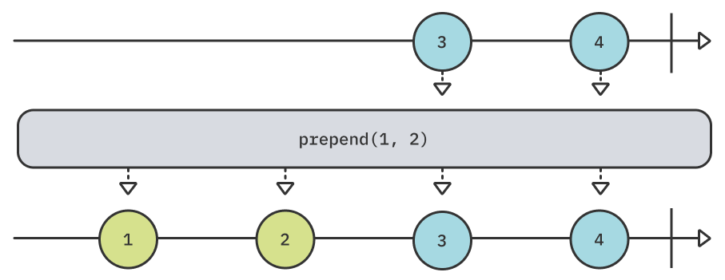
在你的Playground上添加以下代码，对上述例子进行实验：
example(of: "prepend(Output...)") {
// 1
let publisher = [3, 4].publisher
// 2
publisher
.prepend(1, 2)
.sink(receiveValue: { print($0) })
.store(in: &subscriptions)
}
在上述代码中，你：
- 创建一个发送数字
3 4的发布者。 - 使用
prepend在发布者自己的值之前添加数字1和2。
运行你的Playground。你应该在调试控制台看到以下内容：
——— Example of: prepend(Output...) ———
1
2
3
4
相当直接!
等一下，你还记得操作符是如何被连锁的吗？这意味着如果你愿意，你可以很容易地添加多个prepend。
在下面这一行：
.prepend(1, 2)
添加以下内容：
.prepend(-1, 0)
再次运行你的Playground。你应该看到以下输出：
——— Example of: prepend(Output...) ———
-1
0
1
2
3
4
Note
这里的操作顺序很关键。最后的prepend首先影响到上游，也就是说-1和0被prepend，然后是1和2，最后是原始发布者的值。
prepend(Sequence)¶
这个变化的prepend与前面的相似，不同的是它接受任何符合Sequence的对象作为输入。例如, 它可以接受一个Array或一个Set.
在你的Playground上添加以下代码来实验这个操作符：
example(of: "prepend(Sequence)") {
// 1
let publisher = [5, 6, 7].publisher
// 2
publisher
.prepend([3, 4])
.prepend(Set(1...2))
.sink(receiveValue: { print($0) })
.store(in: &subscriptions)
}
在这个代码中，你：
- 创建一个发送数字
5、6和7的发布者。 - 将
prepend(Sequence)链接到原始发布者两次。一次从Array中prepend数值，第二次从Set中prepend数值。
运行Playground。你的输出应该与下面类似：
——— Example of: prepend(Sequence) ———
1
2
3
4
5
6
7
Note
相对于Array，Set需要记住的一个重要事实是，它们是无序的，所以不保证项目发出的顺序。这意味着上述例子中的前两个值可能是1和2，或者是2和1。
但是，等等，还有更多! 许多类型符合Swift中的Sequence，这让你做一些有趣的事情。
在第二个前缀之后：
.prepend(Set(1...2))
添加以下一行：
.prepend(stride(from: 6, to: 11, by: 2))
在这行代码中，你创建了一个Strideable，让你在6和11之间以2为单位跨步前进。由于Strideable符合Sequence，你可以在prepend(Sequence)中使用它。
再运行一次你的Playground，看看调试控制台：
——— Example of: prepend(Sequence) ———
6
8
10
1
2
3
4
5
6
7
正如你所看到的，现在有三个新的值被prepend在之前的输出之前--6、8和10，这是在6和11之间以2为单位跨度的结果。
prepend(Publisher)¶
前面的两个操作符将数值列表prepend到一个现有的发布者上。但是如果你有两个不同的发布者，并且你想把它们的值粘在一起，怎么办？你可以使用prepend(Publisher)将第二个发布者发出的值添加到原发布者的值之前。
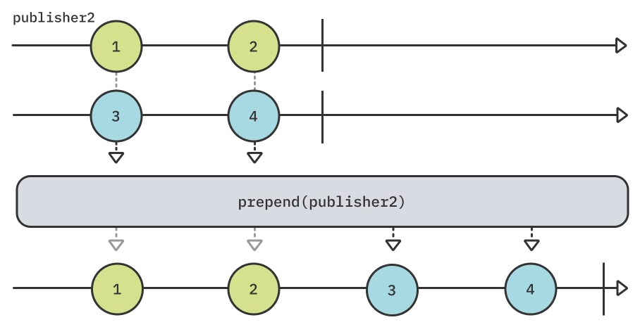
通过在你的Playground上添加以下内容来尝试上面的例子：
example(of: "prepend(Publisher)") {
// 1
let publisher1 = [3, 4].publisher
let publisher2 = [1, 2].publisher
// 2
publisher1
.prepend(publisher2)
.sink(receiveValue: { print($0) })
.store(in: &subscriptions)
}
在这个代码中，你：
- 创建两个发布者。一个发出数字
3和4，另一个发出1和2。 - 把
publisher2放在publisher1的开头。publisher1将开始执行它的工作，只有在publisher2发出.finished完成事件后才会发出事件。
如果你运行你的Playground，你的调试控制台应该呈现以下输出：
——— Example of: prepend(Publisher) ———
1
2
3
4
正如预期的那样，1和2的值首先由publisher2发出；然后才由publisher1发出3和4。
关于这个操作符，还有一个细节你应该注意，用一个例子来说明是最容易的。
在你的Playground的末尾添加以下内容：
example(of: "prepend(Publisher) #2") {
// 1
let publisher1 = [3, 4].publisher
let publisher2 = PassthroughSubject<Int, Never>()
// 2
publisher1
.prepend(publisher2)
.sink(receiveValue: { print($0) })
.store(in: &subscriptions)
// 3
publisher2.send(1)
publisher2.send(2)
}
这个例子和前面的例子类似，只是publisher2现在是一个PassthroughSubject，你可以手动推送值。
在下面的例子中，你：
- 创建两个发布者。第一个发送值
3，和4，而第二个是一个PassthroughSubject，可以动态地接受值。 - 在
publisher1前加上主题。 - 通过主体
publisher2发送数值1和2。
花点时间，在你的头脑中运行一下这段代码。你希望输出的结果是什么？
现在，再次运行这个Playground，看一下调试控制台。你应该看到下面的内容：
——— Example of: prepend(Publisher) #2 ———
1
2
等等，什么？为什么这里只有两个数字从publisher2发送出来？你一定在想...嘿，Shai，你刚才不是说数值应该prepend到现有的发布者上吗？
那么，想想看--Combine怎么能知道被prepend的发布者publisher2已经完成了数值的发送呢？它不知道，因为它已经发送了数值，但没有完成事件。出于这个原因，一个prepend的发布者必须完成，这样Combine就知道是时候切换到主发布者了。
在下面这行之后：
publisher2.send(2)
加上这个：
publisher2.send(completion: .finished)
Combine现在知道它可以处理来自publisher1的发送，因为publisher2已经完成它的工作。
再次运行你的Playground；这次你应该看到预期的输出：
——— Example of: prepend(Publisher) #2 ———
1
2
3
4
append¶
下一组操作符处理的是将发布者发出的事件与其他值连接起来。但在这种情况下，你要处理的是append而不是prepend，使用append(Output...)、append(Sequence)和append(Publisher)。这些操作符的工作原理与它们的prepend类似。
append(Output...)¶
append(Output...)的工作原理与prepend类似。它也接受一个Output类型的变量列表，但在原始发布者完成.finished事件后，再append其项目。
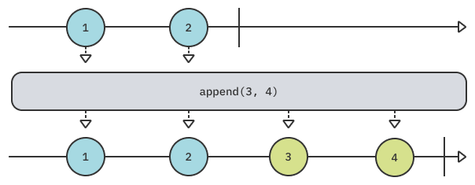
在你的Playground上添加以下代码来实验这个操作符：
example(of: "append(Output...)") {
// 1
let publisher = [1].publisher
// 2
publisher
.append(2, 3)
.append(4)
.sink(receiveValue: { print($0) })
.store(in: &subscriptions)
}
在上面的代码中，你：
- 创建一个只发送一个值的发布者：
1。 - 使用
append两次，首先附加2和3，然后附加4。
想一想这段代码--你认为输出会是什么？
运行Playground并检查输出：
——— Example of: append(Output...) ———
1
2
3
4
附加的工作方式与你所期望的完全一样，每个append都要等待上游完成，然后再把自己的工作加入其中。
这意味着上游必须完成，否则append就不会发生，因为Combine不可能知道前一个发布者已经完成了所有的值。
为了验证这一行为，请添加下面的例子：
example(of: "append(Output...) #2") {
// 1
let publisher = PassthroughSubject<Int, Never>()
publisher
.append(3, 4)
.append(5)
.sink(receiveValue: { print($0) })
.store(in: &subscriptions)
// 2
publisher.send(1)
publisher.send(2)
}
这个例子与前一个例子相同，但有两点不同：
publisher现在是一个PassthroughSubject，这让你可以手动发送值给它。- 你向
PassthroughSubject发送1和2。
再次运行你的Playground，你会看到只有发送到publisher的值被发送出来：
——— Example of: append(Output...) #2 ———
1
2
这两个append操作符都没有作用，因为它们不可能在publisher完成之前发挥作用。在这个例子的最后添加以下一行：
publisher.send(completion: .finished)
再次运行你的Playground，你应该看到所有的值，如预期的那样：
——— Example of: append(Output...) #2 ———
1
2
3
4
5
这个行为对于整个append操作符系列是相同的；除非前一个发布者发送一个.finished完成事件，否则不会发生append操作。
append(Sequence)¶
这个append的变种是接收任何符合Sequence的对象，并在原始发布者的所有值发出后append其值。
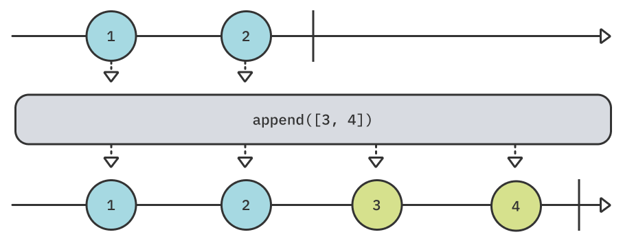
在你的Playground上添加以下内容来实验这个操作符：
example(of: "append(Sequence)") {
// 1
let publisher = [1, 2, 3].publisher
publisher
.append([4, 5]) // 2
.append(Set([6, 7])) // 3
.append(stride(from: 8, to: 11, by: 2)) // 4
.sink(receiveValue: { print($0) })
.store(in: &subscriptions)
}
这段代码类似于上一节中的prepend(Sequence)例子。你：
- 创建一个发送
1、2和3的发布者。 - 添加一个
Array，其值为4和5（有序）。 - 添加一个
Set，其值为6和7（无序）。 - 添加一个
Strideable，在8和11之间以2为步长进行跳跃。
运行你的Playground，你应该看到以下输出：
——— Example of: append(Sequence) ———
1
2
3
4
5
7
6
8
10
正如你所看到的，append的执行是有顺序的，因为前一个发布者必须在下一个append执行之前完成。注意，6和7的集合对你来说可能是不同的顺序，因为集合是无序的。
append(Publisher)¶
append操作符组的最后一个成员是一个变体，它接收一个Publisher，并将其发出的任何值附加到原始发布者的末尾。
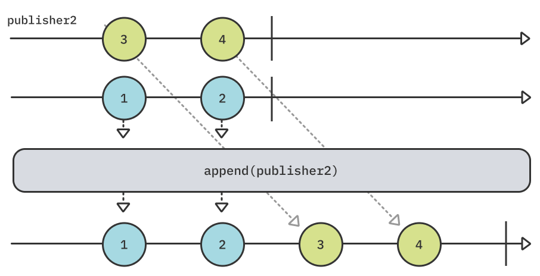
要尝试这个例子，在你的Playground上添加以下内容：
example(of: "append(Publisher)") {
// 1
let publisher1 = [1, 2].publisher
let publisher2 = [3, 4].publisher
// 2
publisher1
.append(publisher2)
.sink(receiveValue: { print($0) })
.store(in: &subscriptions)
}
在这个代码中，你：
- 创建两个发布者，第一个发布者发出
1和2，第二个发布者发出3和4。 - 将
publisher2附加到publisher1，所以一旦完成，publisher2的所有值都附加到publisher1的末尾。
运行Playground，你应该看到以下输出：
——— Example of: append(Publisher) ———
1
2
3
4
高级组合¶
在这一点上，你对附加和prepend值、序列、甚至整个发布者都有所了解。
下一节将深入探讨一些与组合不同发布者有关的更复杂的操作符。尽管它们相对复杂，但它们也是一些对发布者组合最有用的操作符。值得花点时间来熟悉它们的工作方式。
switchToLatest¶
既然本节包括了Combine中一些比较复杂的组合操作符，为什么不从最复杂的一个开始呢？
开个玩笑，switchToLatest很复杂，但非常有用。它可以让你在运行中切换整个发布者的订阅，同时取消待定的发布者订阅，从而切换到最新的发布者。
你只能在那些本身就发送了发布者的发布者上使用它。
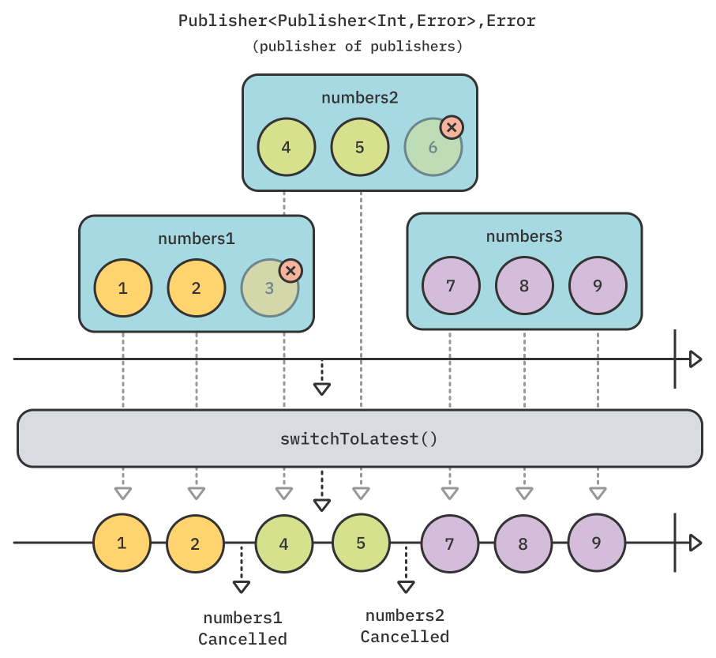
在你的Playground上添加以下代码，对你在上图中看到的例子进行实验：
example(of: "switchToLatest") {
// 1
let publisher1 = PassthroughSubject<Int, Never>()
let publisher2 = PassthroughSubject<Int, Never>()
let publisher3 = PassthroughSubject<Int, Never>()
// 2
let publishers = PassthroughSubject<PassthroughSubject<Int, Never>, Never>()
// 3
publishers
.switchToLatest()
.sink(
receiveCompletion: { _ in print("Completed!") },
receiveValue: { print($0) }
)
.store(in: &subscriptions)
// 4
publishers.send(publisher1)
publisher1.send(1)
publisher1.send(2)
// 5
publishers.send(publisher2)
publisher1.send(3)
publisher2.send(4)
publisher2.send(5)
// 6
publishers.send(publisher3)
publisher2.send(6)
publisher3.send(7)
publisher3.send(8)
publisher3.send(9)
// 7
publisher3.send(completion: .finished)
publishers.send(completion: .finished)
}
呀，这是一个很大的代码! 但不要担心，它比看起来要简单。把它分解开来，你。
- 创建三个
PassthroughSubject，接受整数，没有错误。 - 创建第二个
PassthroughSubject，接受其他PassthroughSubject。例如，你可以通过它发送publisher1，publisher2或publisher3。 - 在你的
publishers上使用switchToLatest。现在，每次你通过publishers主题发送不同的发布者时，都会切换到新的发布者，并取消之前的订阅。 - 发送
publisher1到publishers，然后发送1和2到publisher1。 - 发送
publisher2，取消对publisher1的订阅。然后你向publisher1发送3，但它被忽略，向publisher2发送4和5，它们被推送，因为有一个对publisher2的活动订阅。 - 发送
publisher3，取消对publisher2的订阅。像以前一样，你发送6到publisher2，它被忽略，然后发送7、8和9，它们被推送到publisher3的订阅中。 - 最后，你向当前的发布者
publisher3发送一个完成事件，并向publishers发送另一个完成事件。这样就完成了所有活动的订阅。
如果你按照上面的图示，你可能已经猜到了这个例子的输出。
运行playground，看看调试控制台：
——— Example of: switchToLatest ———
1
2
4
5
7
8
9
Completed!
如果你不确定为什么这在现实生活中的应用程序中是有用的，请考虑以下场景。你的用户点了一个按钮，触发了一个网络请求。紧接着，用户再次点击该按钮，触发了第二个网络请求。但你如何摆脱待定的请求，而只使用最新的请求呢？switchToLatest来解救!
与其只是理论，为什么不试试这个例子呢？
在你的Playground上添加以下代码：
example(of: "switchToLatest - Network Request") {
let url = URL(string: "https://source.unsplash.com/random")!
// 1
func getImage() -> AnyPublisher<UIImage?, Never> {
URLSession.shared
.dataTaskPublisher(for: url)
.map { data, _ in UIImage(data: data) }
.print("image")
.replaceError(with: nil)
.eraseToAnyPublisher()
}
// 2
let taps = PassthroughSubject<Void, Never>()
taps
.map { _ in getImage() } // 3
.switchToLatest() // 4
.sink(receiveValue: { _ in })
.store(in: &subscriptions)
// 5
taps.send()
DispatchQueue.main.asyncAfter(deadline: .now() + 3) {
taps.send()
}
DispatchQueue.main.asyncAfter(deadline: .now() + 3.1) {
taps.send()
}
}
和前面的例子一样，这可能看起来是一段很长很复杂的代码，但一旦你把它分解开来就很简单。
在这段代码中，你：
- 定义一个函数，
getImage()，执行一个网络请求，从Unsplash的公共API中获取一张随机图片。这使用了URLSession.dataTaskPublisher，这是Foundation的众多Combine扩展中的一个。你会在第3节"Combine in Action"中了解到更多关于这个和其他的扩展。 - 创建一个
PassthroughSubject来模拟用户对按钮的点击。 - 在点击按钮时，通过调用
getImage()将点击映射到一个新的网络请求，以获取随机图片。这实质上是将Publisher<Void, Never>变成Publisher<Publisher<UIImage?, Never>, Never>- 一个发布者的发布者。 - 使用
switchToLatest()和前面的例子完全一样，因为你有一个发布者的发布者。这保证了只有一个发布者会发出数值，并且会自动取消任何剩余的订阅。 - 使用
DispatchQueue模拟三个延迟的按钮。第一次点击是立即的，第二次点击是在三秒后，最后一次点击是在第二次点击后的十分之一秒。
运行Playground，看看下面的输出：
——— Example of: switchToLatest - Network Request ———
image: receive subscription: (DataTaskPublisher)
image: request unlimited
image: receive value: (Optional(<UIImage:0x600000364120 anonymous {1080, 720}>))
image: receive finished
image: receive subscription: (DataTaskPublisher)
image: request unlimited
image: receive cancel
image: receive subscription: (DataTaskPublisher)
image: request unlimited
image: receive value: (Optional(<UIImage:0x600000378d80 anonymous {1080, 1620}>))
image: receive finished
你可能会注意到，实际上只有两张图片被取走了；这是因为在第二次和第三次点击之间只有十分之一秒的时间。第三次点击在第二次取图返回之前切换到一个新的请求，取消了第二次订阅--因此这一行写着image: receive cancel。
如果你想看到一个更好的可视化效果，请点击以下按钮：
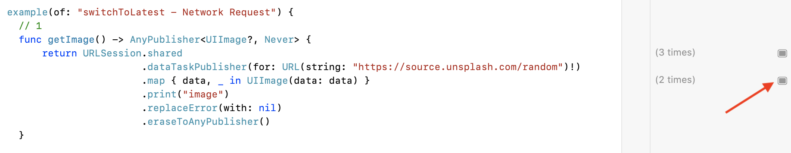
然后再次运行Playground并等待几秒钟。你应该看到最后一张图片被加载。
右键单击该图像，选择"历史值"：
你应该看到两个加载的图像--你可能需要滚动才能看到这两个图像：
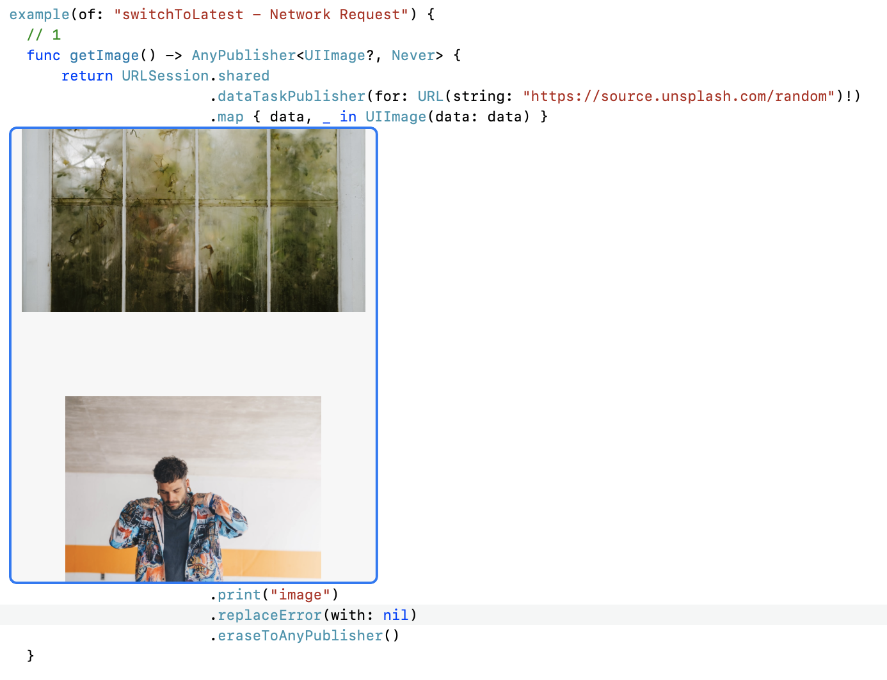
你应该看到两个加载的图像--你可能需要滚动才能看到这两个图像。
merge(with:)¶
在本章结束前，你将用三个操作符来总结，它们的重点是结合不同发布者的发送。你将从merge(with:)开始。
这个操作符将来自同一类型的不同发布者的发送值交织在一起，就像这样：
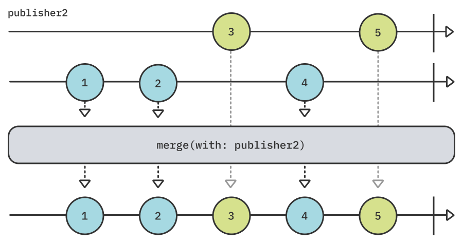
要尝试这个例子，请在你的Playground上添加以下代码：
example(of: "merge(with:)") {
// 1
let publisher1 = PassthroughSubject<Int, Never>()
let publisher2 = PassthroughSubject<Int, Never>()
// 2
publisher1
.merge(with: publisher2)
.sink(
receiveCompletion: { _ in print("Completed") },
receiveValue: { print($0) }
)
.store(in: &subscriptions)
// 3
publisher1.send(1)
publisher1.send(2)
publisher2.send(3)
publisher1.send(4)
publisher2.send(5)
// 4
publisher1.send(completion: .finished)
publisher2.send(completion: .finished)
}
在这个与上图相关的代码中，你：
- 创建两个
PassthroughSubject，接受并发出整数值，不会发出错误。 - 将
publisher1与publisher2合并，将两者发出的值交错。Combine提供了重载，让你合并多达8个不同的发布者。 - 你把
1和2添加到publisher1，然后把3添加到publisher2，再把4添加到publisher1，最后把5添加到publisher2。 - 你向
publisher1和publisher2发送一个完成事件。
运行你的Playground，你应该看到以下输出，正如预期的那样：
——— Example of: merge(with:) ———
1
2
3
4
5
Completed
combineLatest¶
combineLatest是另一个操作符，让你结合不同的发布者。它还可以让你结合不同价值类型的发布者，这可能是非常有用的。然而，它不是将所有发布者的发送交织在一起，而是在任何一个发布者发送出一个值的时候，发送一个包含所有发布者的最新值的元组。
但有一个问题。在combineLatest本身发送任何值之前，原发布者和传递给combineLatest的每一个发布者必须至少发送一个值。
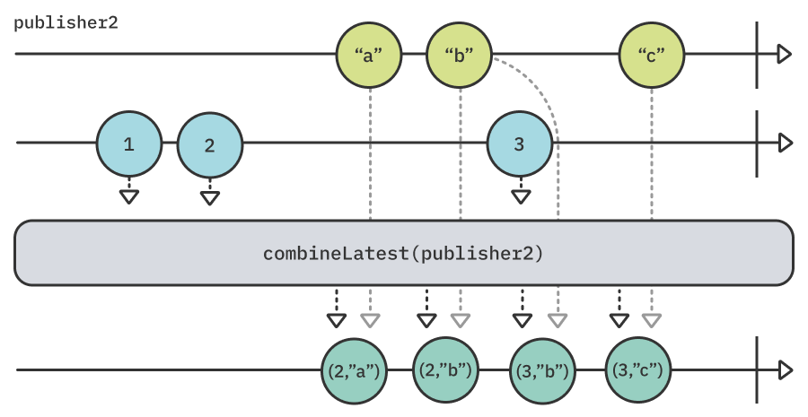
在你的Playground上添加以下代码来尝试这个操作符：
example(of: "combineLatest") {
// 1
let publisher1 = PassthroughSubject<Int, Never>()
let publisher2 = PassthroughSubject<String, Never>()
// 2
publisher1
.combineLatest(publisher2)
.sink(
receiveCompletion: { _ in print("Completed") },
receiveValue: { print("P1: \($0), P2: \($1)") }
)
.store(in: &subscriptions)
// 3
publisher1.send(1)
publisher1.send(2)
publisher2.send("a")
publisher2.send("b")
publisher1.send(3)
publisher2.send("c")
// 4
publisher1.send(completion: .finished)
publisher2.send(completion: .finished)
}
这段代码再现了上述图表。你：
- 创建两个
PassthroughSubjects。第一个接受无错误的整数，而第二个接受无错误的字符串。 - 将
publisher2的最新发出值与publisher1结合起来。你可以使用combineLatest的不同重载来合并多达四个不同的发布者。 - 将
1和2发送给发布者1，然后将"a"和"b"发送给publisher2，然后将3发送给publisher1，最后将"c"发送给publisher2。 - 向
publisher1和publisher2发送一个完成事件。
运行Playground，看看控制台的输出：
——— Example of: combineLatest ———
P1: 2, P2: a
P1: 2, P2: b
P1: 3, P2: b
P1: 3, P2: c
Completed
你可能注意到，从publisher1发出的1从未通过combineLatest推送。这是因为combineLatest只有在每个发布者至少发出一个值时才开始发送组合。在这里，只有在"a"发送之后，这个条件才是真的，这时publisher1最新发送的值是2。这就是为什么第一次发送是(2, "a")。
zip¶
你将以本章的最后一个操作符结束：zip。你可能会从Swift标准库中的Sequence类型的同名方法中认出这个操作。
这个操作符的工作原理类似，在相同的索引中发出成对的值的元组。它等待每个发布者发出一个项目，然后在所有发布者在当前索引处发出一个值之后，发出一个单一的项目元组。
这意味着，如果你正在zip两个发布者，每次两个发布者都发出一个新的值时，你会得到一个单一的元组。
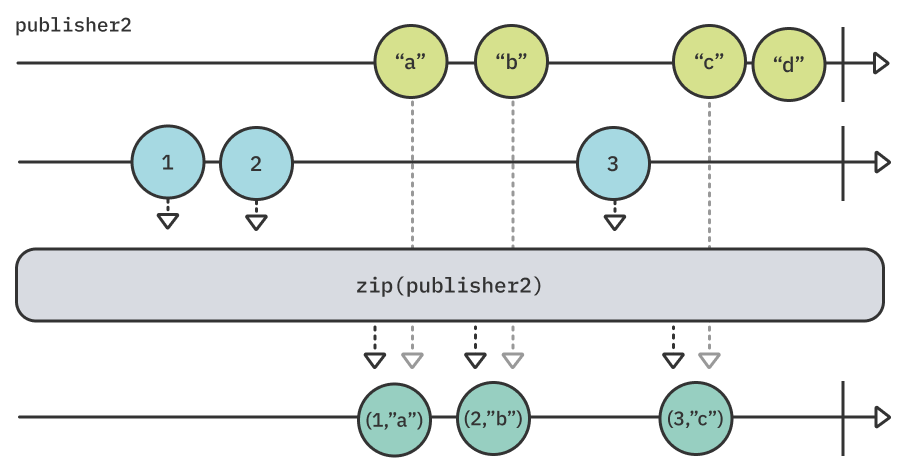
在你的Playground上添加以下代码来尝试这个例子：
example(of: "zip") {
// 1
let publisher1 = PassthroughSubject<Int, Never>()
let publisher2 = PassthroughSubject<String, Never>()
// 2
publisher1
.zip(publisher2)
.sink(
receiveCompletion: { _ in print("Completed") },
receiveValue: { print("P1: \($0), P2: \($1)") }
)
.store(in: &subscriptions)
// 3
publisher1.send(1)
publisher1.send(2)
publisher2.send("a")
publisher2.send("b")
publisher1.send(3)
publisher2.send("c")
publisher2.send("d")
// 4
publisher1.send(completion: .finished)
publisher2.send(completion: .finished)
}
在这个最后的例子中，你：
- 创建两个
PassthroughSubject，第一个接受整数，第二个接受字符串。两者都不能发出错误。 - 将
publisher1和publisher2使用zip操作符绑定，一旦它们各自发出一个新的值，就将它们的发送配对。 - 把
1和2送到publisher1，然后把"a"和"b"送到publisher2，然后把3再送到publisher1，最后把"c "和"d"送到publisher2。 - 完成
publisher1和publisher2。
最后一次运行你的Playground，看一下调试控制台：
——— Example of: zip ———
P1: 1, P2: a
P1: 2, P2: b
P1: 3, P2: c
Completed
注意每个发送的值是如何等待另一个zip的发布者发送一个值的。1等待第二个发布者的第一次发送，所以你得到(1, "a")。同样地，2等待第二个发布者的下一个发送，所以你得到(2, "b")。从第二个发布者发出的最后一个值，"d"，被忽略，因为没有从第一个发布者发出的相应的值可以配对。
关键点¶
在这一章中，你学会了如何将不同的发布者，从它们中创造出有意义的组合。更具体地说，你学到了以下内容。
- 你可以使用
prepend和append系列的操作符，在不同的发布者之前或之后增加来自一个发布者的发送。 - 虽然
switchToLatest是相对复杂的，但它非常有用。它接收一个发布者的发送，切换到最新的发布者，并取消对之前发布者的订阅。 merge(with:)让你从多个发布者中交错取值。combineLatest只要任何一个发布者发布了一个值，一旦所有合并的发布者至少发布了一个值，就会发布所有合并发布者的最新值。zip对来自不同发布者的发送进行配对，在所有发布者都发送了一个值之后发送一个配对的元组。- 你可以混合组合操作符，在发布者和他们的发送之间建立有趣和复杂的关系。
接下来去哪？¶
这已经是相当长的一章了，但它包括了Combine所提供的一些最有用的和涉及的操作符。为你能走到这一步而点赞!
这一次没有挑战。试着用你到目前为止学到的所有操作符进行实验，有很多用例可以玩。
在接下来的两章里，你还有两组操作符要学习。"时间操纵操作符"和"序列操作符"，所以请继续阅读下一章！